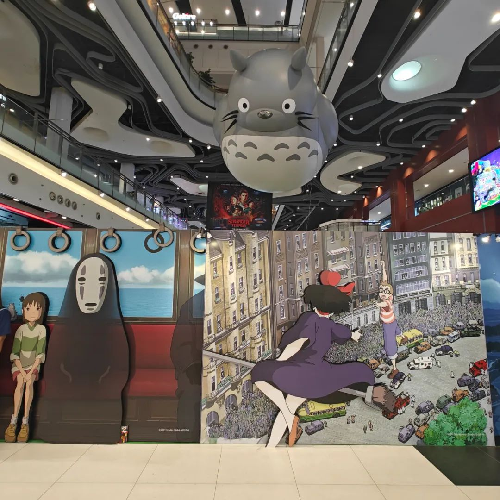

共计977个字，2张图
这篇就是上一篇的一个替代版，我看GPT来写比我自己来写会不会有什么不一样。我的提示词是：
我正在写一篇微信公众号的推文，请将这篇文章用个性化、天马行空、自由散漫的语气重新写一遍。
虽然是GPT写的，但由于Prompt提示词仍然是我自己写的，所以我把这篇仍然计入了原创，并且标记为第272篇。
以下
来啊，来一场文学的狂欢！这是张衔瑜那第271篇略带“张狂”的心情碎片，不用计较那1020个字、2张图，每个字都有它存在的意义，每张图也是心情的注脚。那天，我灵魂出窍般开个玩笑，眼前那些博士生如同过眼云烟：你不知道啊，他们进学院，简直就是大摇大摆的摇摆你、我，更何况还是那医学院。那么，下次你看到那位临床的新医生对你鞠躬，或是那群热情的学生手里捧着鲜花，你会想起我说的这个预言了。想吃？哈，我老早就在幻想那双层麦辣鸡腿堡融化在嘴里的味道，但就是怎么也迈不出那步去品尝。有时候，生活就像那计划多时的大兴安岭之旅，光有票还不够，路线熟悉也不行，总是被现实一巴掌拍回原形。梦想中的生活，和真实中的距离，就如大象站在地上那寂静般的巨大。真的，人们总在羡慕别人的生活，却不知每个人的起点终点其实都只是一个转折。说实话，那甘源的香辣味青豆，真的有点怪怪的，是麻辣？还是芥末？总之，这种味道有点叫人摸不着头脑。人生，就是这样，充满了不确定性。我们总以为生命是无尽的，但其实每一刻都是那么的短暂和珍贵。近来的我，变得有些孤僻。消息来了，看心情。不想回就不回，我就是那传说中的信息黑洞，一切消息进来就再也出不去了。李志问的是麻雀的价格，我却想问，这世上，理智的价值又是多少？早年的我热衷于用脚步丈量这世界的每一寸土地，如今的我，只想找个安静的地方静静地坐下。说真的，现在连那个天桥都不想走了。别提那头发了，你知道我每次从理发店出来的心情吗？感觉自己都不像我了。还记得上周那两本书吗？真的，我就是放在那，都没翻开一页。还有啊，我暂时关了朋友圈，不知道啥时候再开，但最近的状态，就是这样了。生活中，偶尔会有一些小快乐，可能是一个可爱的小物件，也可能是一个突然闪过的回忆。但不管怎样，这些都是生活中的调味品。所以，你看，人生就是这样，有时候没什么大不了的。嗯，到此结束，谢谢参与这次的小旅行！
图还是续上吧。选了最近拍的两张：吸走可乐的冰块，囚禁在商场里的幻想
